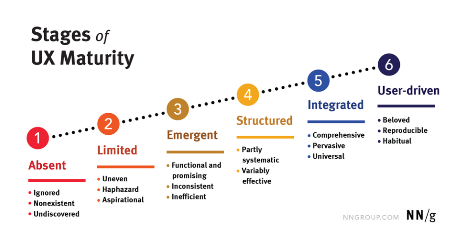
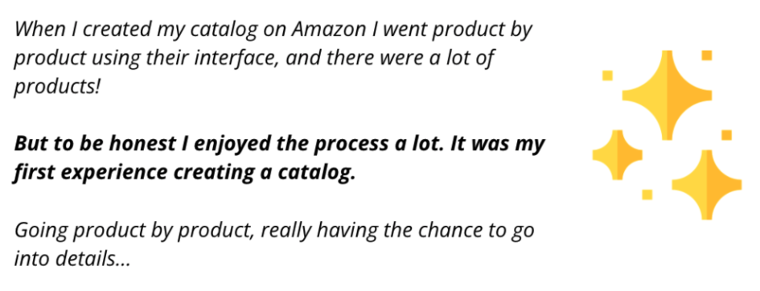

May 28 · Written By Nat.
The Low User Centricity Problem
The term User centric was coined for the first time on 1977, yet we find companies that still
struggle to be in contact regularly with their users.
It has been common in my carreer to find companies with different types of UX maturity, but
of course, no one was 100% user driven, and there was always margin to improve.

Stages of UX Maturity from Nielsen Norman Group
Cath the eye of business
When presenting the results of any research is it always a must have a full slide with
the economic cost of our actions, so I try to answer those questions to make them see
how close is the link between benefits and good user experience:
- How much time did we invest fixing stuff on this project?
- How much time / money could we save if we had done research on this topic? Considering:
- New design needed.
- Bad experience for the customer.
- Hours / Person redoing the job.
- Fustration of the team
- How much time is this process as it is? How much fast could it be?
- What would be the economic benefit from it?
- What could be developing instead?
- ...
Shorten the distance between everyone and the user
“What do you think our user cares about the most?”
You can ask that same question to different roles inside a company, and every role might tell you
something different, but you will also see something happening, roles that are more in contact with
the user, are closer to the truth.
The knowledge is not for us to keep as a privilege, but more as a right that everyone should have access,
at the end, that knowledge will be the first cause of many to a good experience for the user.
The following are a list of strategies to make people be more mindful of the user:
Weekly User verbatims:
We create a slack channel and we share User verbatisms there every week. People are waiting
for this moment as a little break and usually tag someone who they know is interested in the
topic of that verbatism.

Example of a user verbatim shared on the channel
Open interviews
We share with some weeks ahead of our interview schedule, and we invite as a shadow agent some of our
developers, PMs, or other stakeholders. Sometimes they are just another guest on the interview and
at the end of the questions done by the UR, the guest asks some questions of their own.
Share recordings of User Testings
Especially cool for developers who want to see how users will use their work, it is also an enjoyable
moment as you see how unexpected can be the user behaviour.
Teach User research practices
It is key to make everyone aware of their own bias. We shouldn’t stop any PM or stakeholder to do interviews.
- Teach User research practices.
- Promotion of User Personas.